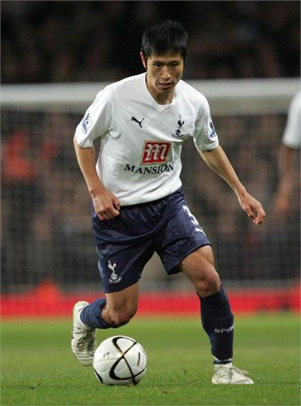

Lee Young-pyo (Korean: 이영표; Korean pronunciation: [i.jʌŋ.pʰjo]; born 23 April 1977) is a South Korean retired professional footballer who played as a right-footed left back.

Lee was recognized for his speed and dribbling skills. His former manager Martin Jol once called him "the best left back in Holland".[2][3]